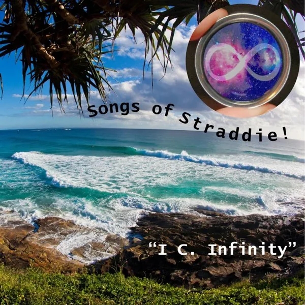

Songs of Straddie
The island doorway: Minjerribah, summer, tides, romance, community, and the first public invitation to meet the project where it lives.

Music videos
Watch Songs of Straddie
Select Watch video beside a song to play it here.
Choose a song below, or press play.
Songs
Dolphin Daze lyric videoBonus video
Dance of the Dakini (By She) lyric videoBonus video
Dance of the Dakini (By He) lyric videoBonus video